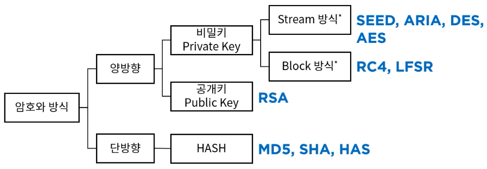

정보보안의 3대 요소 CIA
웹의 경우 사용자의 요청을 처리하는 서버는 HTTP 프로토콜의 특성상 그 요청이 누구의 요청인지 알 수 없다.
따라서 사용자를 식별하는 인증과, 권한 제어인 인가처리를 위해서 로그인 + 쿠키를 이용할 수도 있다.
하지만 정보 보안에 대한 고려 없이 쿠키에 사용자에 대한 민감한 정보를 담았을 때 제 3자가 이를 탈취하거나, 변조하게 되면 치명적인 이슈가 발생할 수 있다.
- 기밀성(Confidentiality) : 허가된 자만 해당 정보에 접근할 수 있는 성질.
- 무결성(Integrity) : 적절한 권한을 가진 사용자가 인가된 방법으로만 정보를 변경할 수 있는 성질
- 가용성(Availability) : 정보에 대한 접근이 인가된 자는 그 정보를 사용할 수 있는 성질
암호화는 정보 보안의 3대 요소 중 기밀성과 무결성을 위한 것이다.
암호화
암호화는 데이터 보호를 위해 알고리즘으로 평문을 변환하는 과정을 말한다.
- 암호화의 분류

양방향
양방향 암호화는 암호화와 복호화가 가능한 알고리즘을 의미한다. 양방향 알고리즘에는 대칭키 알고리즘, 비대칭키 알고리즘이 있다.
대칭키 암호화
암호화와 복호화에 같은 키를 사용하는 알고리즘이다. 비대칭키에 비해 계산 속도가 빠르지만, 사용자가 많아지면 관리해야 할 키의 수가 많아진다는 단점이 있다.- ex. HMAC : 누구든 무결성 검사가 가능한 해싱을 보완하여, 공유된 개인 키를 가진 자만이 데이터 무결성 검사를 할 수 있는 기법.(데이터 무결성 + 송수신자간 인증)
- 해시 + 대칭키 알고리즘으로 데이터의 무결성, 기밀성을 확보할 수 있다.
- 서로 같은 개인 키를 공유해야 하기 때문에 데이터가 송수신되는 경로와 다른 경로로 안전하게 전달되어야 한다.
- ex. HMAC : 누구든 무결성 검사가 가능한 해싱을 보완하여, 공유된 개인 키를 가진 자만이 데이터 무결성 검사를 할 수 있는 기법.(데이터 무결성 + 송수신자간 인증)
비대칭키 암호화
암호화와 복호화에 다른 키를 사용하는 알고리즘이다. 개인키로 암호화된 데이터는 공개키로 복호화, 공개키로 암호화된 데이터는 개인키로 복호화 하며, 같은 키로는 복호화를 할 수 없다.- (1)개인키로 암호화 하는 경우 : 메시지 인증(부인방지)에 중점
(2)공개키로 암호화 하는 경우 : 데이터의 안전한 전송(데이터 보안)에 중점
개인적으로 이유를 추론해 보자면,
(1)공개키로 복호화 되는 암호문은 반드시 개인키로 암호화 되어야 하므로 개인키를 소지한 주체가 데이터를 전송하였음이 보장(부인방지)되는 것.
(2)공개키로 암호화 한 암호문은 개인키를 소지한 주체만이 복호화 하여 내용을 확인할 수 있기 때문에 데이터를 안전하게 전송할 수 있다.- RSA : 공개키 암호화 알고리즘. 소인수분해의 어려움에 기반. SHA-256 + 비대칭키 암호화로 데이터 기밀성 + 무결성을 확보한다.
단방향
= Hash
암호화된 암호문을 평문으로 되돌릴 수 없는 암호화 방식. 대표적으로 SHA, MD 등이 있다.